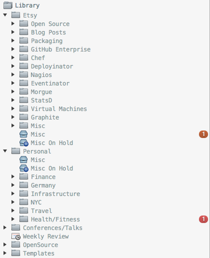
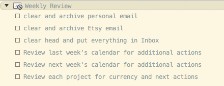

My Omnifocus Setup
At this point it’s pretty fair to say that OmniFocus rules my life. I’ve started to really take GTD seriously around 2012. I had tried a lot of different task managers before of course. I loved Things when it originally came out as a beta and of course I had started to write my own todo tracker like everybody else. But I had never actually read the book before because I thought I didn’t need such a sophisticated todo tracker. That changed when I started a new job and moved to a different country. Suddenly there were so much more things to keep track of and do. So I read the book, pulled out Things again and tried to implement my version of GTD. However it became apparent to me very quickly that the way I want to use it (collect everything and have a lot of different ways to retrieve/view data) wouldn’t work with Things. So I shelled out a lot of money and bought OmniFocus. And I have tried a couple of times to use a different tool again but nothing worked for me as good as OF does. Mainly because I have arrived at a setup that is very well integrated with my daily workflow.
The Basics
I have OmniFocus running on my personal and work laptop as well as on the iPhone and iPad (although I hardly ever use it on there). They are all synced through webdav and owncloud on my personal servers. I mainly use it on the laptop and the iPhone client serves mostly for quickly inputting data or pulling up a list when I’m on the go.
Collecting all the things
As every GTD guide ever will tell you, the system only works if it is your one and only system that contains everything. And thus you have to add all your todos and ideas in there. I try to heavily follow this approach as I found it to be very true for me that I lose confidence in the tool as soon as it doesn’t contain my whole world. Paramount to this is the ability to enter new items from basically everywhere and support every way that could generate things for you to do. Luckily for me this means only a handful of things:
- Random things that I come up with
- GitHub issues
- Jira
This basically covers all variations of how I have new things landing on my plate. And thus I have made sure all those things find an easy way into my inbox.
Random things
I use Alfred 2 heavily on the desktop to quickly switch to or open
apps, convert units, lookup people, and a myriad of other things. Naturally
that means this is also the place where I should be inputting all new todos as
they come to mind. For that I’m using an awesome workflow
that I found somewhere on the internet. It allows me to fire up the Alfred
prompt and simply enter todo do awesome thing @context and on hitting enter
the new item is in my inbox with the correct context. This allows me literally
add new things in a matter of seconds and bother later with filtering,
remembering and doing them.
Email is a little bit trickier. There are awesome plugins for Mail.app to work with Omnifocus and I hear they make it a breeze to get things done. However my email client of choice is mutt. Which means there is a bit more hacking to do (as usual). However I found a great Python script that parses emails and adds them to Omnifocus. I also added this keybinding to my mutt configuration:
macro index,pager \Ca "<enter-command>unset
wait_key<enter><pipe-message>mutt-to-omnifocus.py
<enter><save-message>=gtd-needs-reply/<enter><sync-mailbox>"
Now all I have to do when reading an Email or browsing through the list is hit
Ctrl-a and mutt automatically creates a task in my Omnifocus inbox and moves
the email out of my inbox into a folder I creatively called gtd-needs-reply
(I also have one called gtd-to-read which I use for emails that I still have
to read). This keeps my Email inbox clean and has the benefit since it adds an
Omnifocus entry with the context “Email” that I can easily find all the emails
I have to write with a custom perspective (more on that later).
GitHub Issues
A decent amount of things to do for me are also generated via GitHub Issues. This can either be issues on one of the public GitHub projects I maintain or more often a code review at work. We use Pull Requests on GitHub Enterprise for code reviews at Etsy and if someone wants you to review code, they assign the pull request to you. Since there is no need for me to go through my Email for notifications about code I have to review, I wrote a simple script that runs every 10 minutes and checks whether I have issues assigned that are not yet in my Omnifcous. This script reads a configuration file which can have an arbitrary number of GitHub (Enterprise) instances and asks for all issues assigned to a user owning the OAuth token. It then generates a ticket title based on the repo URL and issue number and adds a configurable context (Github or EtsyGithub for me) to it. It then creates an Omnifocus inbox tasks based on that data, again easily findable by context in Omnifocus.
Jira
We use Jira at Etsy to manage tickets and workload and thus the majority of my work is captured in there. Since I don’t want to have two places to look for things, I’m also pulling all my Jira tickets into Omnifocus. This is done with basically the same script as the GitHub sync but uses jira4r as the input source. It then drops a todo item with the Jira project key and ticket number into my inbox with the context Etsy:Jira. This makes it super easy to organize all the work I am assigned in Omnifocus. The only downside to that is that it’s not a 2-way sync. Right now I clean up and close tasks in Omnifocus (and Jira) when I actually finish them or during the weekly review. I also only create tickets for myself in Jira and don’t add tickets from Omnifocus when I create new todos with the Etsy:Jira context. This wouldn’t be very hard to do but I haven’t found it to be super painful to do it manually.
Basic Structure
So now that I have an easy way to enter all the incoming work into Omnifcous, the next step is organizing all the things. For that I use folders heavily for the basic structure and something close to the Areas of Responsibility in the GTD book. I have top level folders for Etsy, Personal, Talks and Open Source. And under those another layer of folders which reflect finer grained areas of responsibility. You see the structure here:

Within those areas a have the actual projects I work on and usually a single action list project for miscellaneous things. I organize active and someday projects in there by putting someday projects in On Hold status. This makes it easy to find projects I’m working on by filtering for active ones in a perspective. The project view is the most important one for finding and organizing my work. I never fully got into using contexts for things other than automated tools that pull in data. I rarely find myself in actually different contexts where it makes sense to pull up a specific list and all my tries to get that working ended in confusion for me (ymmv).
Perspectives all the way down
Based on that structure I have created a handful of custom perspectives to quickly find things I need. You can see the overview of my perspectives in the screenshot below.
The most important one is the Today perspective. It holds all items that are due, overdue or flagged. This is my daily todo list with things I wanna get done today. The next ones are Etsy active projects, next actions and weekly summary. Those I pull up for planning daily tasks and writing my weekly summary. I also have a perspective for Personal active projects which I don’t use that much but still pull up often enough to be valuable. The only crux with those perspectives is that they are mostly project and not context based. That means most of the perspectives don’t sync to the iPhone. For now that is ok for me because I mostly use the iPhone to add stuff to the inbox and to check my daily todo list which I made a context based perspective. And I’ve also heard that project based perspectives will be syncing to the iPhone in the future. So that will help a lot.
Review, Review, Review
As every person that is trying to do their version of GTD will tell you, consistent reviews are the heart of a working system. And that is no different for me. I try to really be disciplined about my weekly reviews and try to do daily reviews but often only end up actually doing them 3 times a week or so. Which is not too bad as long as the weekly review is consistent.
Daily
My daily review routine is pretty straight forward. I pull up the today list and mark everything as done I completed but haven’t checked off yet. Then I pull up my active perspectives and flag stuff I wanna work on today. That’s it, simple and easy.
Weekly
My weekly review is a bit more complex. I actually have a recurring project that becomes available every Friday and is due on Sunday and looks like this:

This is my checklist to do my weekly review. So every weekend I will clear out and archive all email and filter unprocessed email into gtd-to-read or gtd-needs-reply. This is mostly mailing list stuff since I try to stay on Inbox Zero during the week. I then put every thing I can think of that has to be done into the inbox. I check my calendar from last week if there is anything left to be done from meetings and check next weeks calendar for stuff I have to prepare. I then hit the Review button in Omnifocus and start reviewing all my projects. That usually starts with sorting all the inbox items into the folder structure and then going through all the other projects to mark things as completed and add new actions. This usually takes a bit longer for active projects, whereas on hold projects I can go over quickly because they don’t usually have a lot of activity. I have set my default review cycle to 5 days in general. That means projects become available for review again after 5 days, so when I don’t get to it on the Weekend and do my review on Monday morning, I still have the projects ready for review on Friday.
Verdict
For now I think I have found a good balance of using a lot of features of Omnifocus while still keeping it somewhat simple and not going overboard with the setup. Automating a lot of things - especially for inputting data - has made a big difference in trusting the system to be my only source of truth for work that needs to be done. My biggest problems are still making sure to take enough time for the reviews, keep adding todos and paying attention to my daily list even if I’m stressed and some days also … you know … actually getting things done.